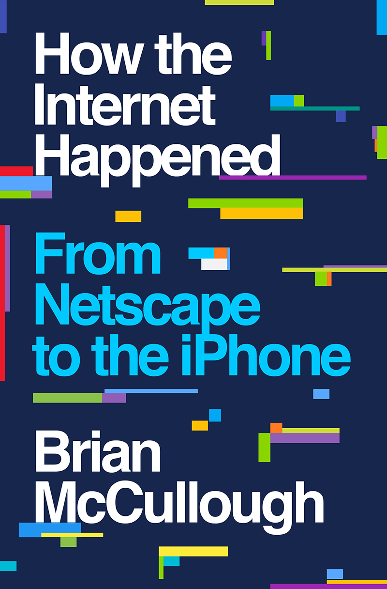

布莱恩·麦卡洛（Brian McCullough）是"互联网历史播客"（Internet History Podcast）的创办人和主持人，多年来采访了数百位亲历互联网崛起的企业家、工程师和投资人。2018年，他将这些口述材料与大量一手文献整合为《互联网是怎样诞生的》（How the Internet Happened: From Netscape to the iPhone），由利夫莱特出版社（Liveright/W. W. Norton）出版。这本书聚焦于1993年至2008年这段互联网从实验室走向全球商业主流的关键十五年，以编年叙事的方式串联起网景浏览器的诞生、雅虎与亚马逊的崛起、互联网泡沫的膨胀与破裂、谷歌搜索引擎的横空出世、社交媒体的萌芽，直到苹果iPhone开启移动互联网时代。
麦卡洛的叙述从马克·安德森（Marc Andreessen）和吉姆·克拉克（Jim Clark）创立网景公司开始。1994年，网景浏览器（Netscape Navigator）让普通人第一次可以通过图形界面浏览万维网，由此引发了互联网商业化的第一波浪潮。紧随其后的是门户网站之争——雅虎、美国在线（AOL）、Excite争相成为用户上网的第一站；亚马逊的杰夫·贝索斯则看到了电子商务的潜力，从在线书店起步，逐步构建了互联网零售帝国的雏形。1999年至2000年的互联网泡沫是全书的重要转折点：麦卡洛详细描述了风险资本如何疯狂涌入、"眼球经济"如何取代利润逻辑、Pets.com和Webvan等明星公司如何在烧光数亿美元后灰飞烟灭，以及纳斯达克指数从五千点暴跌至一千点的惨烈过程。然而泡沫的废墟中生长出了真正改变世界的企业——谷歌凭借PageRank算法和精准广告模型成为互联网时代最强大的公司之一，而eBay和PayPal则证明了在线交易平台的商业可行性。书的后半部分转向Web 2.0时代：博客、维基百科、YouTube代表了用户生成内容的兴起，Facebook从哈佛宿舍走向全球社交网络，而2007年iPhone的发布则标志着互联网从桌面向移动端的历史性迁移。
这本书的价值在于它将众多碎片化的互联网故事编织成一条连贯的叙事线索。麦卡洛并不试图提供理论框架或技术分析，而是以记者的视角还原每一个关键时刻的商业决策与人物博弈。读者可以看到，许多后来被认为理所当然的商业模式——搜索广告、社交网络、应用商店——在诞生之初都充满了不确定性和偶然性。对于投资者和创业者而言，这本书提供了一面镜子：互联网的历史表明，技术变革的方向往往可以预见，但赢家的身份几乎无法提前确定；在每一次浪潮中，最终胜出的往往不是最早进入的先驱，而是在正确的时间以正确的方式解决了用户真实需求的那一个。
麦卡洛在书中反复展示的一个主题是：泡沫并非纯粹的非理性狂热。互联网泡沫时期的核心愿景——在线购物、数字支付、流媒体、社交网络——几乎全部在泡沫破裂后的十年内变为现实，只是时间表和胜出者都与当初的预期不同。这一洞察对于理解任何新兴技术的投资周期都具有深刻的参考价值。正如麦卡洛在全书结尾所暗示的那样，互联网的故事远未结束，但理解它的前半段，是理解数字经济未来走向的必要前提。